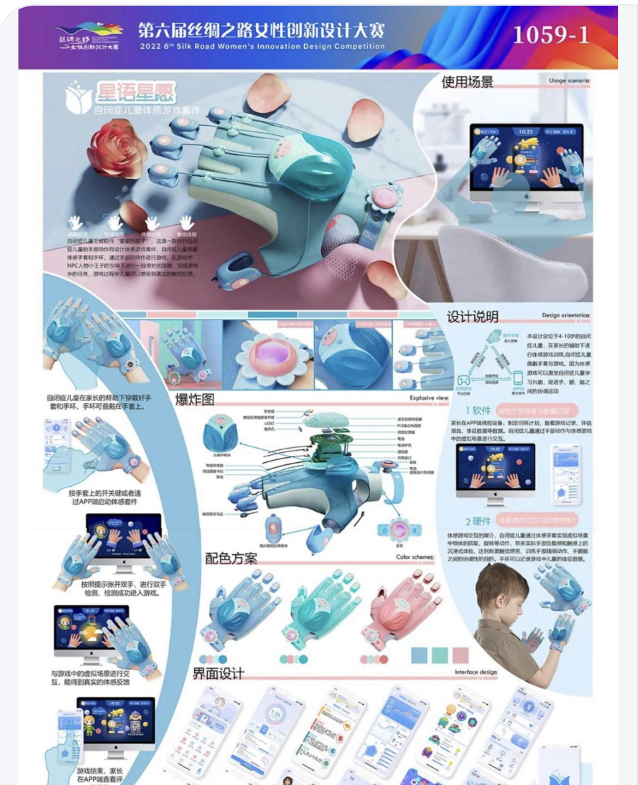
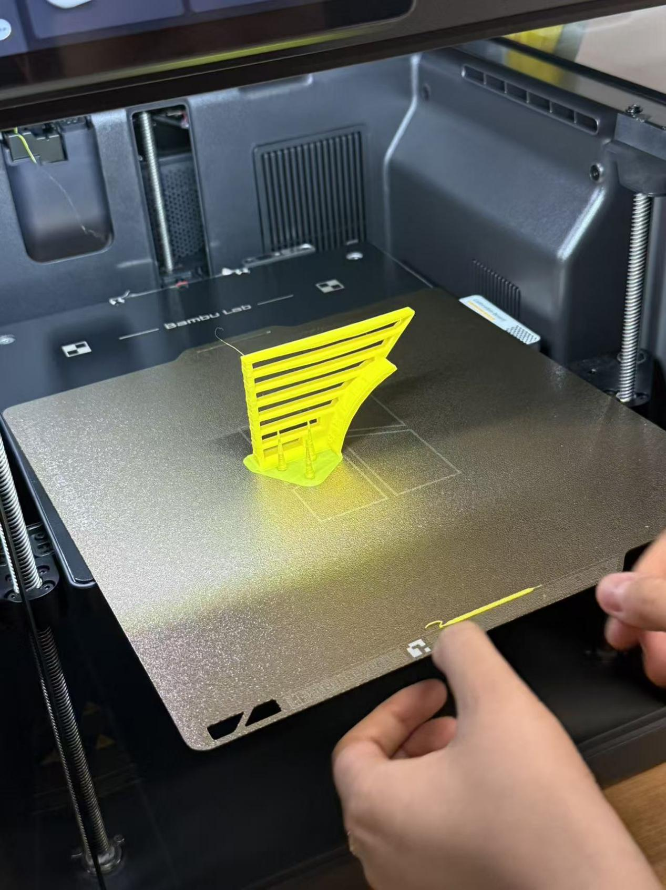
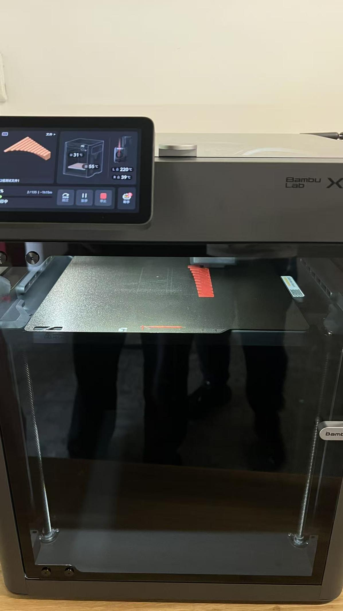
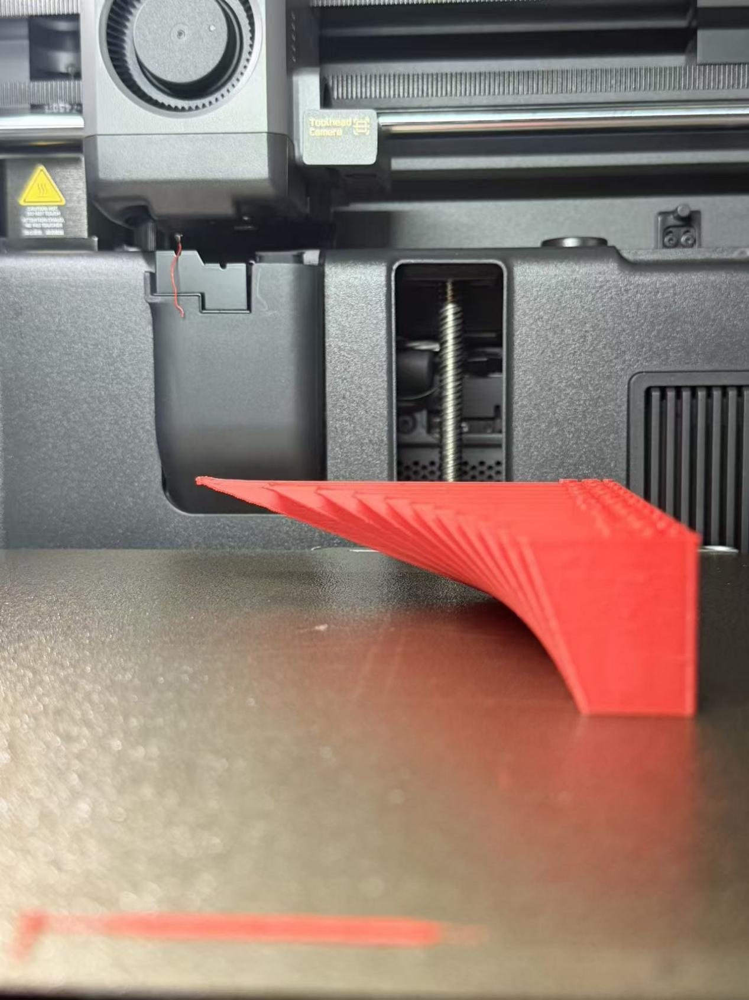
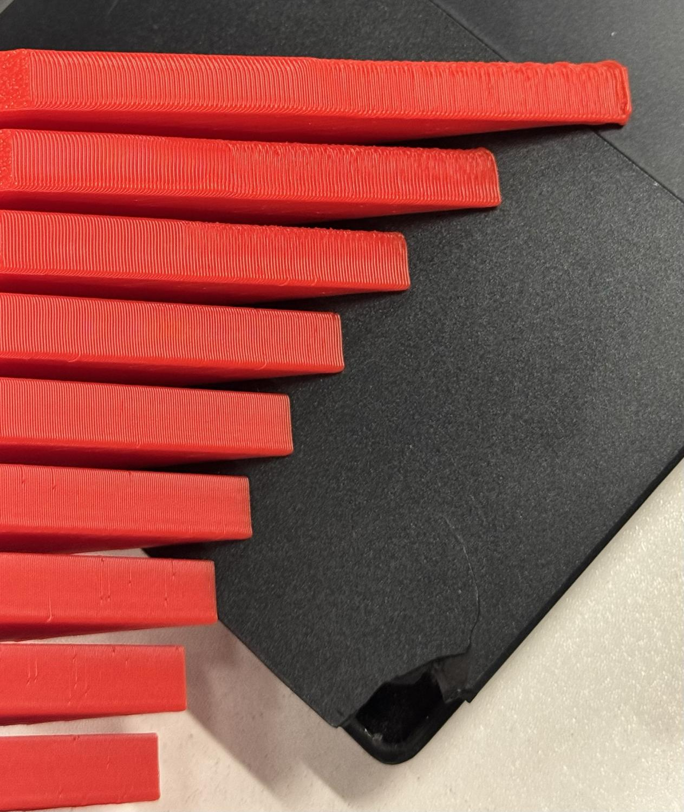

Exercise 4: 3D Printing Applications & Testing
I. Research Directions and Applications
Case 1: 3D Emotion Dice - Helping Autistic Children Recognize and Express Emotions
This is a 3D printed toy developed by student teams at Sabancı University in Turkey during the Spring 2025 semester, designed to support emotional cognitive abilities in autistic children. What makes this project special is that the design process had autism expert and psychologist Begüm Kobanbay as a consultant, ensuring the product truly meets the needs of target users.

Design Background:
Student team leader Birsen Beril Bildirici learned about toys developed for special children at an international workshop, and was inspired to bring this idea back to implement in the CIP course.
Core Concept:
Expert consultant Kobanbay pointed out that for children on the autism spectrum, recognizing and expressing their own and others' emotions often requires special effort. Many studies use two-dimensional visual materials (such as pictures, cards) to assist this process, but the addition of three-dimensional objects can transform children from "observers" to "active participants" - this is precisely the design goal of the 3D Emotion Dice.
Production Method:
The dice were 3D printed at Sabancı University's CoSpace (Collaborative Space) maker space. This tool will be used in various activities with autistic children under the CIP framework.
Key Insight: This case demonstrates that even structurally simple products (like dice), as long as the design logic is correct—transforming abstract "emotion" concepts into tangible, manipulable physical objects—can become effective intervention tools. 3D printing makes such customized production possible.
Source: Sabancı University News
Case 2: Somatosensory Game Training Kit for Autistic Children's Hand Motor Skills
This is a somatosensory game training kit designed for hand motor skills training in autistic children, consisting of gloves and wristbands. The wristband screen displays device status and records vital signs data such as heart rate and blood oxygen levels during gameplay.

Autistic children achieve grasping and rotation in virtual scenes through somatosensory gloves. When worn, there is actual hand load sensation, enabling precise capture of children's hand movements during gameplay. The gloves have multiple somatosensory feedback vibration points, providing real virtual tactile experience, especially with fingertip tactile feedback components at sensitive fingertip areas, giving children a good immersive gaming experience.
Appearance Design: Adopted bionic design, imitating the form, color, and imagery of rose buds.
Technical Features: The somatosensory glove is the medium for somatosensory game interaction, containing bending sensors that monitor finger bending degree. The glove can precisely capture children's hand movements during gameplay and evaluate training effectiveness based on movement stability and accuracy.
Source: Baidu News
II. 3D Printing Testing
Test Piece 1:




Problem: Hollow Slender Cantilever Shows Bending Deformation
- Uneven Cooling Shrinkage: Hollow long thin-walled structures have different heat dissipation rates at different positions, resulting in varying shrinkage amounts during cooling, causing overall inward bending.
- Interlayer Stress Accumulation: Internal stresses from layer-by-layer printing continuously accumulate. Slender cantilever structures without constraints undergo deformation and bending after stress release.
- Poor Upper Layer Heat Dissipation: The higher the height, the more severe the heat accumulation. Molten material cooling is delayed, amplifying deformation.
Test Piece 2:








Problem 1: Tip Warping & Edge Curling
The red piece's end curls upward, which is thermal warping deformation: uneven cooling shrinkage of printed layers, large temperature difference inside and outside the material, unconstrained ends result in corner curling.
Problem 2: Lower Layer Smooth, Upper Layer Rough
Long strip print piece has smooth lower layer but rough upper layer, caused by changing conditions as printing height increases.
- Heat Dissipation Difference: Lower layer close to heated bed has stable heat dissipation. Upper layer is blocked by workpiece, heat accumulates, material melts and overflows, resulting in rough layer lines.
- Mechanical and Extrusion Fluctuations: After Z-axis lifting, nozzle vibration intensifies, filament extrusion becomes unstable, forming accuracy decreases.
- Temperature Gradient Effect: Upper layer is far from heated bed, large environmental temperature difference, uneven material shrinkage amplifies texture patterns.
Summary
This exercise explores practical applications of 3D printing technology in assisting autistic children and analyzes common issues encountered during 3D printing testing.
Key Learnings:
- Understanding how 3D printing enables customized assistive devices for special needs populations
- Analyzing design principles for transforming abstract concepts into tangible interactive objects
- Identifying common 3D printing defects: warping, bending, surface roughness
- Understanding root causes: cooling shrinkage, stress accumulation, heat dissipation differences
- Learning troubleshooting approaches for improving print quality